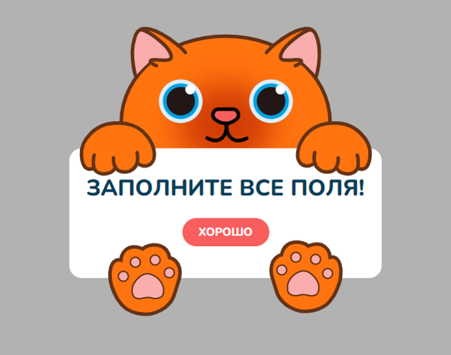
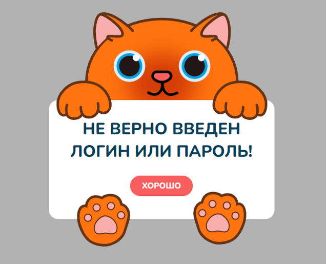
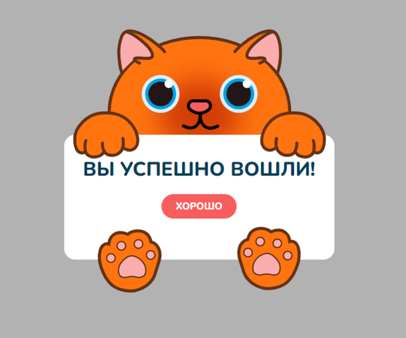

Описание работы
Хакатон LeoHackDays
Данный проект выполнялся в рамках работы в ТГПУ им. Л.Н. Толстого, ВУЗ собирался проводить хакатон и мне было поручено сделать сайт для данного мероприятия. В работе использовал HTML, CSS, Jquery.
Сайт адаптирован под мобильные устройства.
Описание работы
Котангенс
Данная работа была выполнена в рамках магистерской дисертации на тему "Разработка, внедрение и оценка эффективности онлайн-ресурса "Состязательные математические мероприятия". Работу выполняли вдвоем, я занимался Frontend частью, авторизацией/регистрацией и педагогическим экспериментом для оценки эффективности. В реализации использовал HTML, CSS, Jquery, PHP
На стартовой странице пользователя встречает название данного онлайн-ресурса, его слоган и логотип, краткое содержание ресурса и кнопка «Войти», а также подсказка, как принять участие
Логотип сайта на стартовой странице следит за курсором
При нажатии на кнопку "Войти" открывается модальное окно с авторизацией и кнопокой регистрации, которая в свою очередь открывает окно с регистрацией
При отправке формы будет выведено окошко с ошибками или же с успешным заполнении полей
  
При успешной авторизации пользователь попадает на главную страницу, контент которой делится на 3 части, слева при нажатии на стрелку выезжает навигационное меню, при взаимодествии с пунктами данного меню центральная часть меняется на то, что нажал пользователь, справа же находится блок уведомлений, который открывается при нажатии на иконку колокольчика
В блоке соревнований находится список соревнований, разделенных на 3 категории: Одиночные, Командные и Завершенные, при клике на которые открывается одноименный список соревнований
В блоке профиля вся информация о пользователе: ФИО, почта, пароль, фото. Данную информацию можно изменить
В блоке мои команды находится ифнормация о командах, в которых состоит пользователь, также есть возможность создать свою
Блок "Таблица лидеров" содержит рейтинг лучших пользователей
Пункт "Мои соревнования" есть только у пользователей-преподавателей, в нем находится список соревнований, которые создал пользователь, а также есть кнопка для создания нового соревнования
Описание работы
Смотри и Учись
Данный проект выполнялся в рамках моей дипломной работы бакалавра. В работе использовал HTML, CSS, PHP, MySQL, Jquery.
На стартовой странице пользователя встречает текстовое сообщение о точ, что нужно зарегистрироваться, в шапке сайта есть кнопка "Войти", при клике на которую открывается модальное окно с авторизацией и кнопкой перехода на страницу регистрации
После успешной авторизации, пользователь попадает на главную страницу, в центре находится лента подписок, в которой отображены последние изменения в курсаз, на которые подписан пользорватель
В шапке сайта появляется фото пользователя, при наведении на которую появляется меню с переходом на страницу курсов пользователя, а также функционал со сменой фото профиля Также в шапке находятся список курсов, при наведении на которые выплывает многоуровненвый список курсов, и популярные курсы, которые показывает список отсортированных по кол-ву подписчиков курсы
С помощью строки поиска можно искать интересующие пользователя курсы
При посещении курса пользователь может подписаться на него
Курсы, на которые подписан пользователь находятся на странице "Мои курсы"
При нажатии на видео на странице курса, оно открывается в большем формате и под ним можно прочитать краткое его описание
Для пользователя-преподавателя на главной странице помимо всего остального имеется кнопка "Создать курс", которая открывает страницу, где нужно ввести необхожимую информацию о создаваемом курсе
На созданном пользователем-преподавателем курсе имеются кнопки "Добавить видео", при клике на которую можно загрузить видео в данный курс, после его загрузки оно появляется на странице курса и пользователь его может удалить либо изменить о нем информацию
Кнопка "Удалить курс" удаляет курс и все видео находящиеся в нем
Кнопка "Изменить" позволяет изменить ифнормацию о курсе
Описание работы
Музей занимательных наук
Данная работа выполнялась вдвоем, я занимался Frontend и Backend частью, второй человек делал дизайн в Figma
На стартовой странице находятся название, логотип музея, а также интерактивные точки, при наведении на которые появляется информация о содержимом музея.
При нажатии на кнопку "Войти" открывается модальное окно с авторизацией и кнопкой "Регистрация", которая открывает одноименное окно
После авторизации пользователь попадет на страницу личного кабинета, где он может поменять информацию о себе, просмотреть свои награды и достижения
На странице "Залы" находится список доступных залов, в каждом из них представлено несколько фактов и различных интерактивных заданий к ним
При выполнении какого-либо задания пользователь может получить достижение
После прохождения всего зала и выполнения всех заданий выводятся ответы пользователя, а также ответы на задания от других пользователей, которые можно оценить
Описание работы
Дорожная карта проекта
Проект выполнялся в рамках работы в ТГПУ им. Л.Н Толстого, данный ресурс был разработан, как методичка для подачи проекта на гранты и т.п. Работа была выполнена с использованием HTML, CSS, PHP, Jquery, MySQL
На стартовой странице пользователя встречает краткое описание ресурса и кнопка "Регистрация"
После авторизации пользователь может создать проект и загрузить необходимые документы в определенный этап ведения проекта
На странице созданного проекта пользователь=создатель проекта может добавить сотрудника к проекту, загрузить или удалить файлы в каждом этапе, а также удалить сам проект
Приглашенный сотрудник на странице проекта может также добавлять и удалять файлы, а также отправить этап на проверку
Порльзователь-создатель проекта может оценить правильность заполнения документов или указать на ошибки
На главной странице после авторизации пользователь может видеть уведомления в тех проектах, к которым он привязан
Описание работы
Марвел API
Данная работа была выполнена в рамках курса на Udemy. В данном приложении происходит подключение к Marvel API и получение нужных данных с нее. Приложение написано на React.
Стартовый раздел включает в себя шапку с выбором раздела, а также с получением случайного героя Ниже выводится список супергероев, при клике на одного из них, справа появляется информация о выбранном герое
Поиск персонажа и переход на его страницу с описанием
Раздел со списком комиксов, при клике на каждый из них, открывается более подробная информация о выбранном комиксе
Описание работ
Различные другие работы
Данные работы были выполнены в рамках курса на Udemy по макетам в figma и psd-макетам